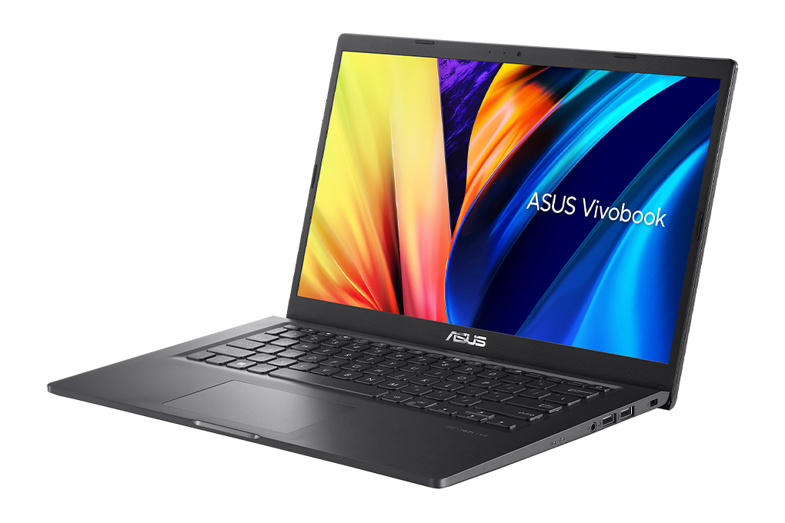

Biodata Diri

Nama: Khuzaivan Ryandiezca
Erlangga
NIM: 607012400023
Kelas: D3SI 48-02
Nama Mata Kuliah
Jaringan Komputer
Pembahasan Perangkat Jaringan Komputer
Perangkat Akhir
Nama Perangkat: Laptop
Gambar
Fungsi: Laptop adalah salah satu perangkat akhir yang
berfungsi sebagai titik komunikasi dalam sebuah jaringan. Pengguna
dapat mengirimkan atau menerima data melalui laptop, baik itu dalam
bentuk email, file, video, atau akses ke aplikasi berbasis web.
Jenis atau macam-macam Perangakat Akhir:
Komputer Desktop: Digunakan untuk keperluan pekerjaan, belajar, atau
hiburan. Biasanya terhubung ke jaringan melalui kabel LAN atau Wi-Fi.
Laptop: Bersifat portabel dan sering digunakan untuk keperluan
profesional atau pribadi. Dapat terhubung ke jaringan dengan Wi-Fi
atau LAN.
Smartphone: Perangkat mobile yang memungkinkan pengguna mengakses
internet, melakukan panggilan, mengirim pesan, atau menjalankan
aplikasi.
Printer: Digunakan untuk mencetak dokumen. Dalam jaringan, printer
dapat diakses oleh banyak perangkat melalui Wi-Fi atau koneksi kabel.
Tablet: Perangkat yang lebih kecil dari laptop dan lebih besar dari
smartphone, biasanya digunakan untuk membaca, hiburan, atau
presentasi.
Smart TV: Dapat digunakan untuk streaming konten multimedia dari
jaringan internet atau lokal.
Sumber Pengambilan:
Buku "Dasar-Dasar Jaringan Komputer" oleh Achmad Cholidin.
Cisco Networking Academy.
Lampiran File Tutorial
File langkah-langkah membuat web hosting dapat Dilihat melalui tautan
ini:
Klik di sini